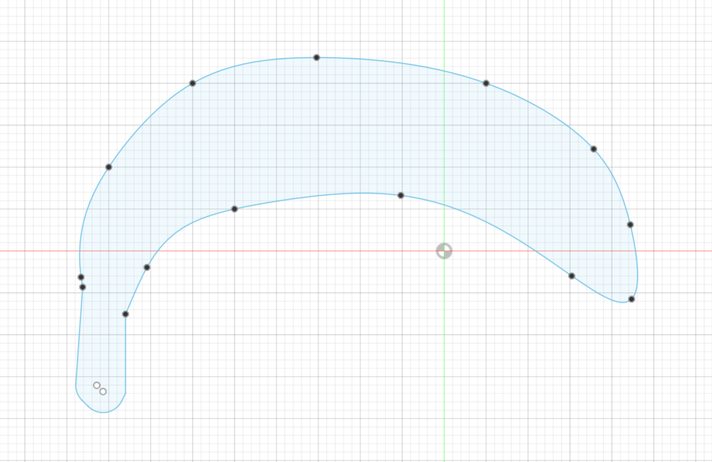
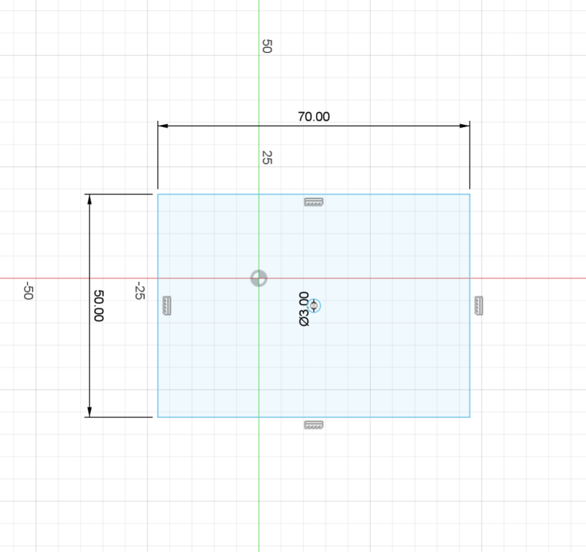
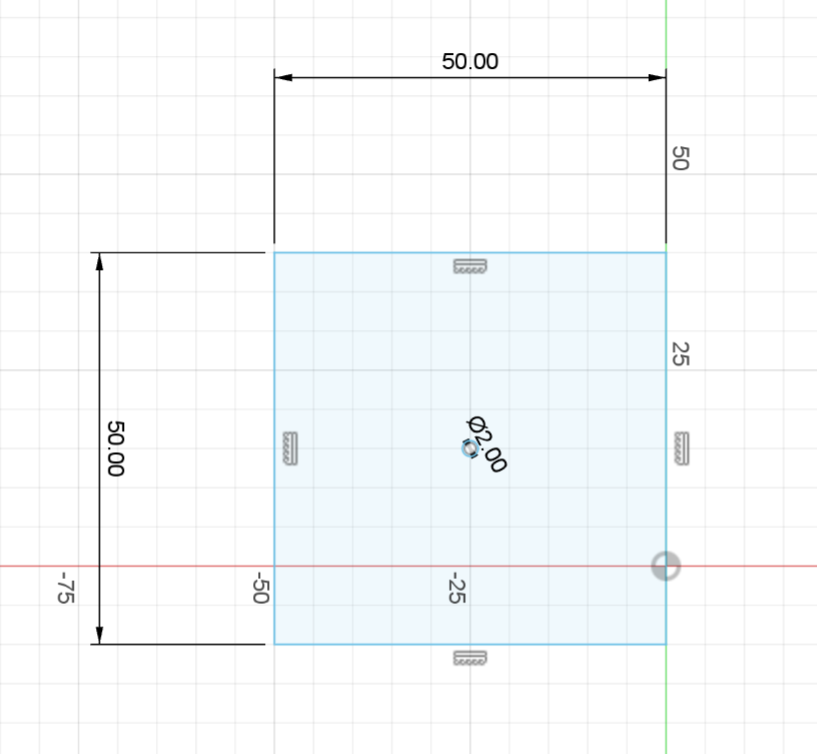

<br>
#### Week 2: Electronics and Tools
## Assignment
This is a simple kinetic sculpture made using a wire and some lazer-cut cardboard pieces. Here are the pieces needed to be cut. A metal wire with a "U" shape in the middle is fed through the holes on either side. Another wire loops around the bottom wire and is attached to the banana cutout on the opposite side.



Here's a video of the piece in action: bouncing banana.
<center>
<video width="600" autoplay muted loop>
<source src="bananaspin.mp4" type="video/mp4">
</video>
</center>
Return home: [link](../index.html).